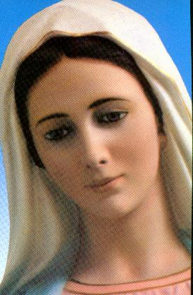
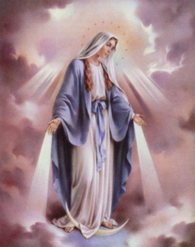

|
 En la sucesión de los años, la VIRGEN MARIA nunca faltó o descuidó de lo deseo hecho por su HIJO, en el opuesto, siempre con muchos cuidados y celos, se reveló una MADRE excepcional y admirable, desde el tiempo de las primeras Comunidades Cristianas, cuando participó y acompañó las principales reuniones de los Discípulos. Aunque no era jefe de los Apóstoles, su presencia les recordaban JESÚS y ELLA se impuso a sí mismo, por su personalidad, sabiduría y carácter inequívocos. En varias oportunidades, ELLA era procurada por ellos, con lo objectivo de mejor orientarlos en sus decisiones. Los Discípulos tomaban concejos y sugestiones con MARIA, porque de hecho, su palabra trajia una incandescente luz a todos los problemas que de empiezo, parecían imposibles de ellos serem resueltos. Sentían por las palabras de ELLA, qué el ESPÍRITU DEL SEÑOR hablava por sus labios... Cada uno y todas las personas que le buscaban , recibian una atención especial, los más cuidadosos desvelos, guiándoles y ofreciéndoles las mejores opciones de vivir, propiciándoles sugestiones del camino mas seguro, de la directriz más correcta para encontrar la perfección espiritual, el pulimento moral y para finalmente pudieren adelantar seguiendo en la dirección del CREADOR. También en MARÍA estaba toda la historia de JESÚS!... Muchas veces vinieron las caravanas de peregrinos para estar con ELLA y poder ellos conoceren de viva voz esos recuerdos deliciosos de su Divino y tan estimado HIJO!...  Eran lecciones de ternura, de una fidelidad permanente y un inmenso y ilimitado amor. Siempre que las hubiera terminado, ELLA dejaba escapar de sus lindos ojos una expresión nostálgica. Una lágrima furtiva resbalava suavemente por el contorno de su rostro repleto de emoción y dejaba caer en la tierra. Es tradición Cristiana que a los 72 años de edad dijo adiós a su vida terrestre. Nosotros decimos que ELLA dijo adiós, porque en el sentido correcto de la palabra, ELLA no murió, tuve un soñoliento pasajero y fué transportada para los Cielos, en Cuerpo y Alma, por un sonoro séquito de Ángeles. Y nada más natural que ha sido así, una vez que la muerte es el castigo infligido a Adán y a sus descendientes (la humanidad), debido al pecado original y los pecados subsecuentes. MARIA tuve su concepción inmaculada, inmune de la influencia del maligno y también estaba llena de gracias, por el mérito de ser la MADRE DE JESUS. Protegida por el SANTO ESPÍRITU, ELLA no tuve ningún pecado, lo más pequeño y menos reproche que ha sido. Por consiguiente, ELLA no murió, su vida tuve un final, alcanzó su objetivo. Cerró sus ojos para dormir y se despertó en la eternidad. Aquél Cuerpo Inmaculado no podría deshacerse en la tumba como un cuerpo cualquiera. Desde el siglo V, la Iglesia conmemora la Asunción de NUESTRA SEÑORA a los Cielos en el 15 de agosto. Y después, en el Cielo, todo su amor, lo suyo afecto profundo y sin límites para el SANTO PADRE y para las cosas Divinas, se extendieron a la humanidad entera. Junto de DIOS, como auxiliar preciosa y eficaz, ELLA continúa de una manera admirable su trabajo maternal en beneficio de todos aquéllos que buscan su ineffable y tan estimada protección, asumiendo de verdad, con decisión y de manera cariñosa el lugar de MADRE de la humanidad. De larga fecha, ELLA viene y aparece a los videntes en manifestaciones sobrenaturales notables, trayendo mensajes, enseñando y ha permitido a todos sus hijos conocer al SEÑOR y el último Deseo Divino, para que todos búsquen la conversión del corazon, guiandose por el camiño del derecho, de la justicia y del amor fraterno, con objetivo de proceder de acuerdo con la Vontad del CREADOR. En cada lugar ELLA aparece de una manera diferente, tanto en la ropa cómo en la expresión de su rostro, recibiendo en la Aparición un nombre que traduce un deseo de ELLA o identifica el lugar de la ocurrencia. Es asi que nuestra SANTÍSIMA MADRE, aunque sea una sola, es conocida por varios nombres: NUESTRA SEÑORA DE CARMO, NUESTRA SEÑORA DE LOURDES, NUESTRA SEÑORA APARECIDA, NUESTRA SEÑORA DAS MERCES, NUESTRA SEÑORA DE FÁTIMA, NUESTRA SEÑORA ROSA MÍSTICA, NUESTRA SEÑORA DEL ROSARIO, NUESTRA SEÑORA DE MEDJUGORJE, NUESTRA SEÑORA DE AKITA, NUESTRA SEÑORA DEL PILAR, NUESTRA SEÑORA DE LA VICTORIA, CORAZÓN INMACULADO DE MARIA, NUESTRA SEÑORA DE NAJU y muchos otros. Es por eso que al mirarmos una imagen de la VIRGEN MARIA, nosotros sentímos un estímulo indescriptible en el corazón, un flujo fuerte que dá disposición y fortifica espiritualmente, confortando el alma. Es la fragancia de su inmenso y grandioso amor que desbordando de la eternidad, inunda sus imágenes de una ternura sin par.
|